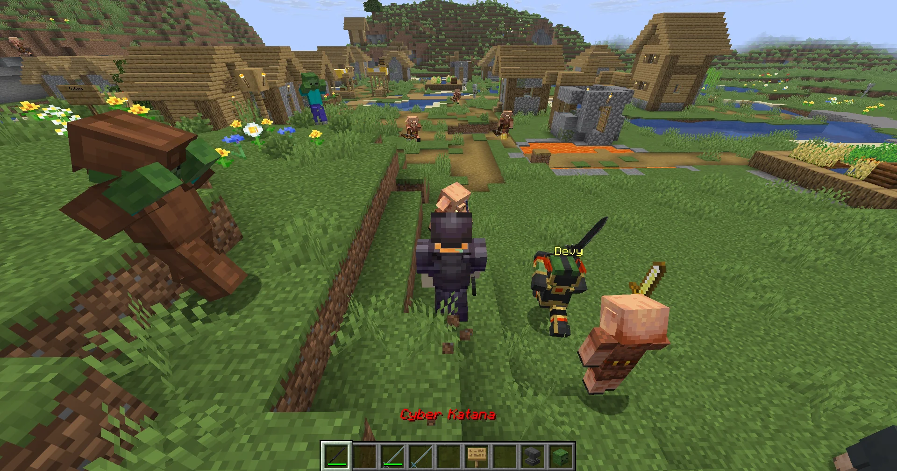
Do that inside the right structure and the whole server feels it — only one Rift can be active at a time, so when one opens, it's not your private instance, it's the event everyone converges on. Guards trickle in first, then a second wave, then the structure's boss itself lands in a full summoning ritual. These aren't reskinned vanilla mobs: each of the six boss types runs its own skill kit — telegraphed attacks you can actually dodge, and "mass seize" abilities that lock down everyone nearby at once. Scripted skill damage always lands (no evade-stat cheese); ordinary swings are still dodgeable.
Win, and the boss doesn't hand you a finished weapon — it hands you the pieces: an Enchantment Stone, a shot at a crafting core, materials specific to that boss. Take those to a crafting table and build one of 129 gear items yourself, each with its own real skill, not just bigger numbers. Then push it further at the Combine Forge — socket stones into it, unlock more sockets, level a stone up, or repair it after it breaks. Elytra skins work the same way: craft one and you're choosing an actual archetype — Speedster, Tank, or Glass Cannon — not a reskin.
And you don't have to do any of it alone. Buy a Deviant — a companion mob you gear up piece by piece, exactly like your own equipment — and it fights beside you, matches your pace, and gets stronger as you level, no separate grind required.
What makes this different
Getting Started
The beginner path — core features and Deviants, everything you need for your first Rift.
Your character: Attributes
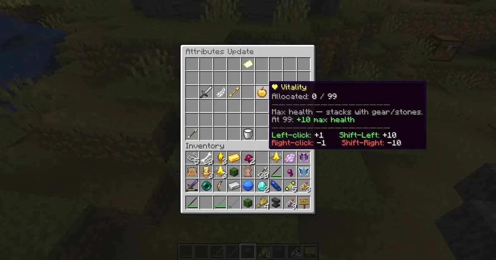
Six stats drive everything you do: Strength (flat damage, melee and ranged and splash alike), Agility (attack speed + movement speed), Dexterity (bow/crossbow damage), Vitality (max health), Intelligence (potion/healing power and damage resistance to magic, poison, fire, and wither), Luck (crit chance). You don't grind a separate bar for these — your RPG level rises off the vanilla XP you're already earning, and every level gives you points to spend in /updatestats. One thing worth knowing early: dying resets all six stats to zero. Points aren't lost forever — you just have to reallocate them once you're back on your feet — but it's the reason a first death stings more than you'd expect.
Finding a Rift: the Rift Board
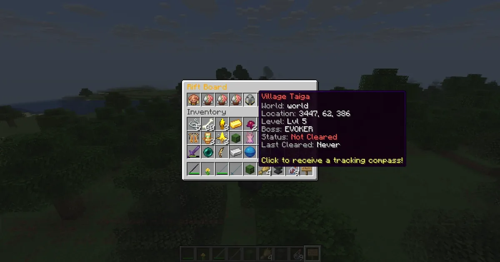
/riftboard lists every structure that's ever been triggered — its level, which boss it produces, whether it's been cleared, and when. Click an entry for a free tracking compass straight to it. If nothing's listed yet, you're looking for one of the game's structures yourself — villages, pillager outposts, ruined portals, ancient cities, and more all qualify.
Opening one: write "claimed" on a sign
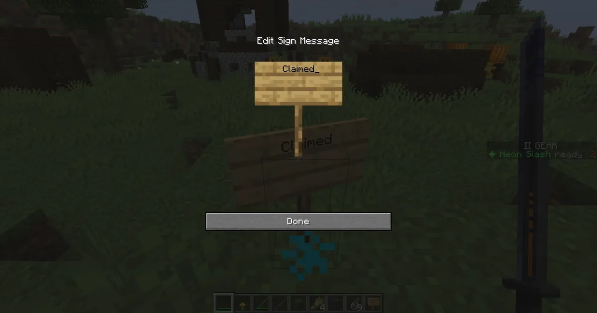
Stand inside an eligible structure and place a sign with the word "claimed" on it. That's the whole trigger — no special item needed. Only one Rift can be active on the entire server at a time, so if someone beats you to it, you'll need to wait or find your own.
Surviving the event
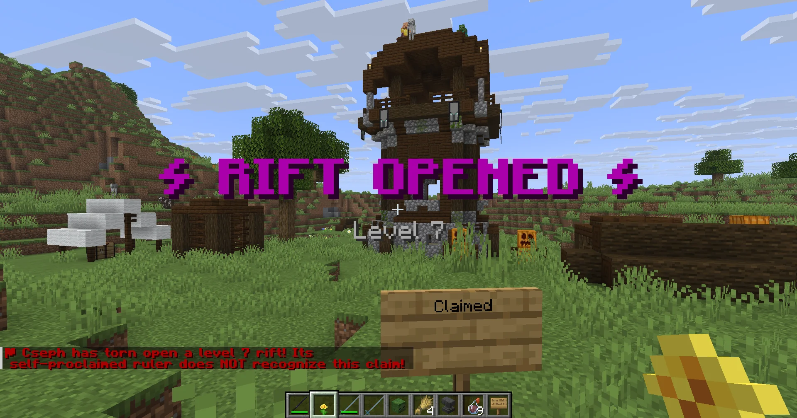
Once triggered, guards spawn in escalating waves — armed with real weapons some of the time, so don't expect pushovers. After two waves, the structure's boss lands in a full summoning ritual with its own escort. Stay near the structure: if everyone leaves or the chunk unloads, the event ends with no loot.
The boss fight
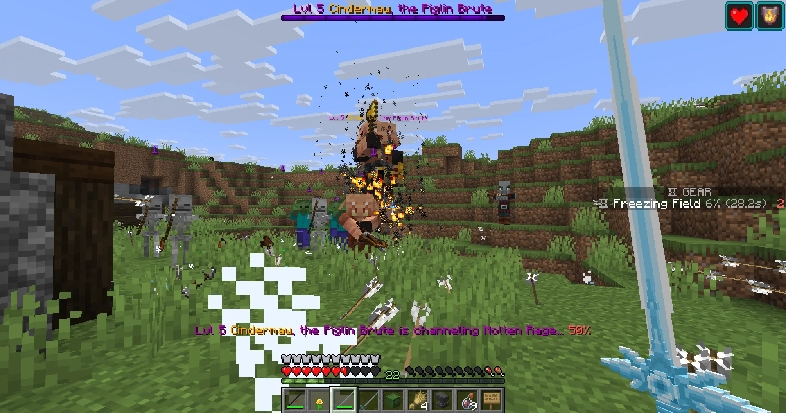
Every boss type has its own kit — telegraphed attacks you can see coming and dodge, and periodic "mass seize" abilities that mark and lock down everyone nearby at once, so don't fight one solo if you can help it. Learning a boss's specific tells before your first attempt goes a long way.
What you walk away with
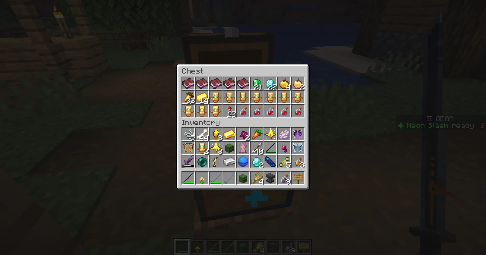
Killing the boss drops a shared loot chest (potions, food, trims, totems, and more) and gives everyone who damaged it their own personal rewards: an Enchantment Stone, a chance at a crafting core and a Socket Stone, and materials specific to that boss. None of this is a finished weapon yet — it's what you build one from.
Building gear: the crafting table
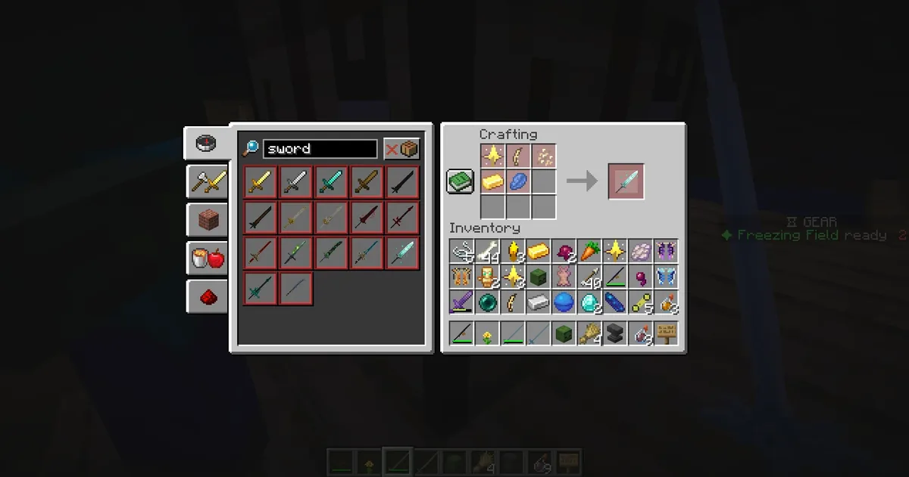
Take your materials to a normal crafting table. Every one of the game's gear items has a fixed recipe built from a crafting core, materials from two different bosses, and some currency ore — meaning a full build means fighting more than one boss type. Each item comes out with its own unique skill already active, just no open sockets yet. Not sure what a recipe needs, or don't want to lay it out by hand? /gearcraft opens a browsable list of every craftable gear item and elytra skin — each one shows its exact ingredients, live have/need counts against your inventory, and a click crafts it instantly if you've got everything.
Growing your gear: the Combine Forge
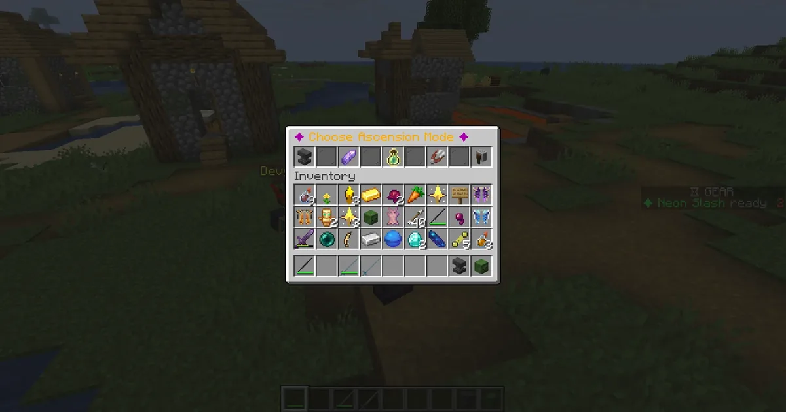
/ascenditem opens the Forge. Socket an Enchantment Stone into an open slot, spend a Socket Stone to unlock another slot (up to 5), sacrifice a spare stone to level up a kept one, pull a stone back out if you change your mind, or repair a piece that broke. This is the loop you'll keep coming back to after every boss kill.
Taking to the sky: Elytra
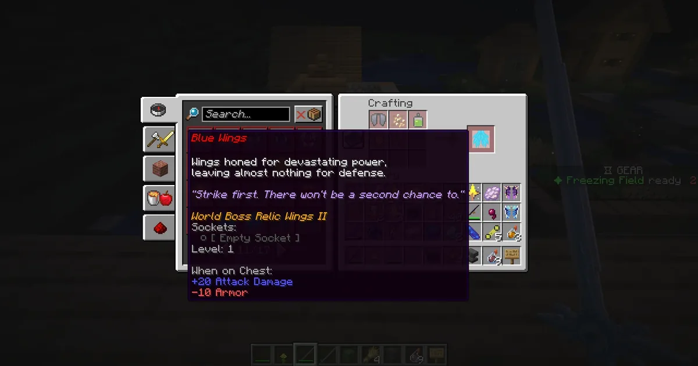
Craft an elytra skin and you're picking a real archetype: Speedster for movement speed and softer landings, Tank for armor, Glass Cannon for damage at the cost of defense. /elytragear gives you a quick-swap loadout so you can stow your elytra and re-equip your chestplate (or the reverse) without digging through your inventory, plus auto-refilling firework rockets while you glide.
Fighting alongside something: Deviants
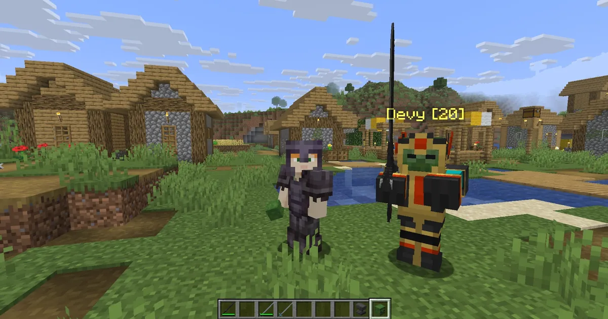
/deviant buy gets you a Deviant skull for 64 emeralds — right-click it to summon or recall your companion, shift-right-click to manage it. It's not a mount; it follows you, breaks off to fight whatever you're fighting, and returns once the fight's over. Gear it up in /deviant equip with its own armor and weapon, exactly like gearing yourself — that's what makes it stronger, not a level bar. Want to test it against someone else's? /deviantduel <player> sets up a straight 1v1 wherever you're both standing.
Gear Info
Every craftable weapon, armor piece, tool, and elytra skin — the skill, effect, and stats shown on its actual in-game tooltip.
Weapons
Piglin Brute
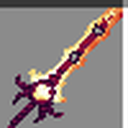
Dragon Slaying Blade
Dragon's Wrath
Right-click to unleash a linear slash
in front of you.
+ 16 bonus damage to everyone in the slash.
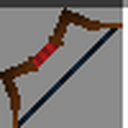
Composite Bow
Piercing Volley
Fully-charged shots detonate in a 5-block radius.
+ Bleed: 3/4.5/7.5 dmg per sec for 5s (Gear Level 1 / 100 / 200).
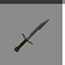
Dagger
Backstab
Punishes a target that isn't watching you; every strike quickens your feet.
Always: Speed III for 1.5s on every hit (whether or not it's a backstab).
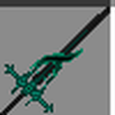
Corrupted Sword
Voidgrasp
Hits can corrupt a foe's body and mind.
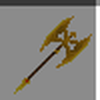
Golden Splitter
Splitting Edge
A killing blow's leftover force chains to a second foe.
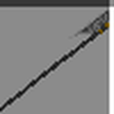
Royal Slash
Sovereign's Edict
Marks a foe as fair game for the whole party.
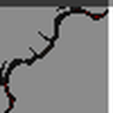
Daedric
Windup Shot
A patient draw detonates in a 7-block radius; a rushed one doesn't.
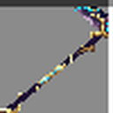
Magi Scythe
Soul Siphon
A mage's reaping blade, drawing both power and life from its victims.
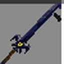
Watcher Claymore
Vigilant Eye
It watches back — and answers whoever dares watch first.
Zombified Piglin
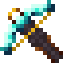
Netherite Crossbow
Molten Bolt
Bolts explode in a fire burst on impact.
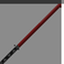
Bloodthirst
Blood Drain
A starving edge that drinks its foe's blood to mend its wielder's wounds.
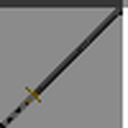
Yamato
Perfect Cut
A planted, patient stance cuts deepest.
A fully-charged strike cannot be evaded.
While charging or fully charged: immune to knockback — only moving on your own breaks the stance.
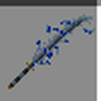
Yamato Thunder Sword
Stormcaller
A blade that calls down the storm — fiercer still when the sky itself answers.
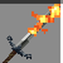
Brimstone Claymore
Molten Wake
Every third swing leaves the ground itself burning.
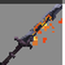
Ember Blade
Simmer
Keep swinging and the blade keeps getting hotter.
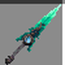
Soul Stealer
Wraith's Mark
A stolen soul arms the very next strike.
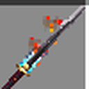
Whisperwind
Silent Gale
A blade that moves as quietly as the wind itself.
Warden
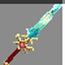
Mythic Blade
Arcane Surge
Walk for 3s to charge a true-damage strike.
Guaranteed minimum: 30 damage.
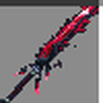
Creation Splitter
Reality Cleave
Right-click to unleash a wide half-moon slash
in front of you.
+ 16 bonus damage to everyone in the slash.
Bloodvein
Rupture
Hits open a stacking bleeding wound.
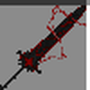
Demonic Greatsword
Vengeance
The closer to death, the harder it hits back.
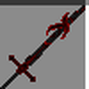
Demonic Sword
Fell Presence
Hits can blind a foe while the sword feeds on their pain.
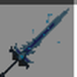
Frostmorne
Soulreap
A blade that hungers for the fallen, growing colder with every soul it claims.
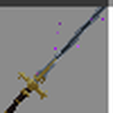
Demigod's Unholy Blade
Unholy Execution
The lower they fall, the harder this blade finishes them.
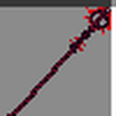
Fallen God Spear
Skyfall Pin
A relic of a god that fell — it still remembers how to pin things down.
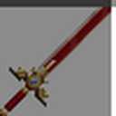
Legendary Sword
Legend's Might
No gimmick. No condition. Just a legendary edge.
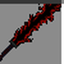
True Creation Splitter
Genesis Cut
A single cut, given the chance to happen twice — and spread.
Witch
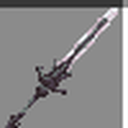
Dark Blade
Umbral Reap
Right-click to shroud yourself in dark power
for 10s — every full swing adds damage + Blindness + Slowness.
2s Blindness + Slowness VI (1s) while active.
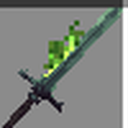
Toxic Long Sword
Venom Cascade
Strike the ground to summon a lingering
poison cloud.
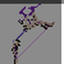
Thundering Pulse
Thunderclap Arrow
Fully-charged shots detonate in an 8-block AoE burst.
strike on every enemy hit for another 45 damage, plus a 3s root + 3s Blindness.
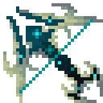
Riesling Crossbow
Frost Lock
A blast on impact slows, fatigues, and damages everyone nearby.
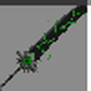
Corrupted Greatsword
Corruptor's Toll
Rewards opening a fight hard, not finishing it.
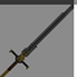
Death Bringer
Reaper's Toll
Spend your own blood to empower the next strike.
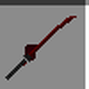
Murasama
Blood Frenzy
A cursed katana that thirsts for blood — sate it, or bleed for it.
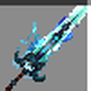
Awakened Lichblade
Withering Curse
A lich's curse doesn't just hurt — it shrinks what you are.
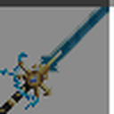
Hero Sword
Heroic Surge
Every fallen foe fuels the next swing.
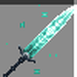
Holy Moonlight Sword
Lunar Ward
Its edge only truly gleams under moonlight.
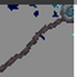
Soul Render
Rend the Soul
Every strike tears a little more of the soul loose.
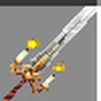
Waxweaver
Bound in Wax
Each strike winds another thread of wax around its victim.
Ravager
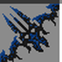
Assassination
Mark for Death
A pulse in a 6-block radius marks enemies; marked enemies detonate for bonus damage once the mark's particle effect fades.
still marked takes 36 bonus execute damage.
Creation Weaver
Life Weave
Walk for 3s to charge a life-giving strike.
Guaranteed minimum: 30 bonus damage.

Dante's Devilsword
Devil Trigger
Bank hits in a short window, then unleash them all at once.
Only full swings bank a stack. Released as a 10-block burst hitting every hostile monster in range (enemy players too, but only while the server's real PVP setting is on).
A visible aura surrounds you for the whole window — enemies can see it charging.
Awakened Devilsword
Rebellion Surge
Every 4th strike echoes with a free phantom hit.
Wolf's Gravestone
Pack Alpha
Every landed hit quickens your stride.
Thorned Blade
Bramble Ward
Thorns wrap the blade — every strike against its wielder is answered in kind.
Bloody Death
Death's Harvest
A killing blow doesn't end the feast — it starts it.
Edge of the Astral Plane
Void Rend
A wound from beyond the stars refuses to close.
Stormbringer
Gale Cutter
A gale rides every swing of this blade.
Storm's Edge
Momentum
The faster you move, the harder this blade lands.
Thunderbrand
Branding Curse
A brand that turns a foe's own strength against itself.
Thunderbringer
Overcharge
Every strike builds a charge that has to go somewhere.
Evoker
Cyber Katana
Neon Slash
Right-click to dash through foes in a
neon blur.
+ 12 bonus damage to everyone struck along the dash.
Flamatic Katana
Cinder Combo
Sneak for 8s to build a charge — a charged hit
roots both fighters and lands 10 rapid slashes.
sneaking), then land a hit. No cooldown.
charged hit: 3s root + 10 rapid slashes.
Blue Rose
Winter's Embrace
Blooms a circle of frost that punishes hostile monsters
and soothes everyone else who lingers.
Grim
Grim Ledger
Marks a debt only you can collect on.
Angelic Greatsword
Aegis Zeal
Every hit wraps you in a growing barrier of light — push it too far and it overloads.
Angelic Sword
Radiant Focus
Consecutive strikes build toward a guaranteed judgment.
Infinity
Overflow
Every strike spills over into your other gear's cooldowns.
Excalibur
Smite the Unholy
A king's blade, sworn against everything that should not walk.
Star's Edge
Mortal Edge
Its edge grows hungrier as its foe's strength fades.
Wick Piercer
Piercing Wick
A needle-fine edge that finds the gaps in any armor.
Armor
Piglin Brute
Dragonsbane Set
Dragonsbane Helmet
Keen Eye - chance to force a critical strike
Dragonsbane Chestplate
Dragonhide Ward - periodic absorption shield
Dragonsbane Leggings
Steady Footing - knockback resistance
Dragonsbane Boots
Hunter's Stride - speed vs. weak/marked foes
4-Piece Set Bonus
Damage dealt to boss-tier enemies +15% (Gear Level 50: +30%, Level 100: +45%).
Taking damage from a boss-tier enemy grants Strength I for 8s (Level 50: 16s, Level 100: 24s) — 10s internal cooldown.
Champion Petra Set
Champion Petra Helmet
Warlord's Focus - chance to cancel blast, splash & magic dmg
Champion Petra Chestplate
Petravein Regen - regens below half health
Champion Petra Leggings
Bulwark Stance - less damage while sneaking
Total reduction is capped at 60% max, however stacked.
Champion Petra Boots
Earthshaker Step - fall-landing shockwave
4-Piece Set Bonus — Champion's Resolve
On any kill, gain Absorption: 2 pts/1 heart (Level 50: 4 pts/2 hearts, Level 100: 6 pts/3 hearts) for 10s.
Zombified Piglin
Fox Set
Fox Helmet
Fox Sense - pings nearby mobs
Fox Chestplate
Nimble Core - chance to dodge a hit
Fox Leggings
Swift Legs - Speed I burst on taking damage
Fox Boots
Silent Paws - 40% chance to negate fall damage, less aggro
4-Piece Set Bonus — Fox's Fortune
5% chance (Level 50: 10%, Level 100: 15%) to fully evade any incoming hit — separate from Nimble Core's own per-piece dodge roll.
Grimdark Gold Set
Grimdark Gold Helmet
Gilded Greed - chance for bonus gold nuggets on kill
Grimdark Gold Chestplate
Golden Bulwark - absorption on big hits
Grimdark Gold Leggings
Molten Legguards - chance to ignite attackers
Grimdark Gold Boots
Heavy Steps - knockback resistance
4-Piece Set Bonus — Golden Frenzy
Every 30s: Strength I and Resistance I for 5s (Level 50: Strength II and Resistance II for 10s, Level 100: Strength III and Resistance III for 15s).
Grimdark Dark Set
Grimdark Dark Helmet
Iron Will - chance to resist Blindness & knockback
Grimdark Dark Chestplate
Netherite Core - flat % damage reduction
Total reduction is capped at 60% max, however stacked.
Grimdark Dark Leggings
Grim Stability - chance to resist Slowness
Grimdark Dark Boots
Grounded - reduced knockback near ledges
4-Piece Set Bonus
Below 30% HP, every 60s: Resistance I for 5s (Level 50: Resistance II for 10s, Level 100: Resistance III for 15s).
Warden
Halo Set
Halo Helmet
Halo Sight - Guardian's Grace: near-death save
Halo Chestplate
Sanctified Core - heals you in combat
Halo Leggings
Blessed Guard - chance to resist Poison & Wither
Halo Boots
Grace Step - 40% chance to negate fall damage
4-Piece Set Bonus
Every 20s: Regeneration I for 3s (Level 50: Regeneration II, Level 100: Regeneration III) and clears every negative effect on you.
Ellegaard Set
Ellegaard Helmet
Tinker's Sight - reveals invisible enemies + highlights mobs
Ellegaard Chestplate
Reinforced Plating - absorption when low on health
Ellegaard Leggings
Servo Legs - Speed II burst on sprint start
Ellegaard Boots
Piston Step - increased jump height
4-Piece Set Bonus — Engineer's Mark
Every 10s, marks a random nearby monster (or an enemy player in PvP-enabled worlds). Damaging the marked target deals +3 bonus damage (Level 50: +6, Level 100: +9) — the mark expires after 10s.
Witch
Black Ninja Set
Black Ninja Helmet
Shadow Veil - sneaking grants Resistance II
Black Ninja Chestplate
Umbral Guard - less damage while sneaking
Total reduction is capped at 60% max, however stacked.
Black Ninja Leggings
Silent Step - sneak-attacks have a chance to crit
Black Ninja Boots
Shadow Dash - speed burst exiting sneak
4-Piece Set Bonus — Night's Embrace
The first hit landed right after a Shadow Veil sneak-triggered stealth window ends deals +6 bonus damage (Level 50: +12, Level 100: +18).
White Ninja Set
White Ninja Helmet
Clear Mind - chance to resist Blindness & Nausea
White Ninja Chestplate
Light Guard - absorption on heavy hits taken
White Ninja Leggings
Swift Steps - periodic Speed I pulse
White Ninja Boots
Featherfall - 40% chance to negate fall damage
4-Piece Set Bonus
At night, 8% chance (Level 50: 16%, Level 100: 24%) per melee hit to force a 1.5× critical strike.
Ravager
Adamantium Set
Adamantium Helmet
Adamant Will - chance to resist Weakness & Mining Fatigue
Adamantium Chestplate
Adamant Core - regenerating absorption shield
Adamantium Leggings
Adamant Legs - full knockback immunity + thorns reflect
Adamantium Boots
Adamant Step - 40% chance to negate stomp damage
4-Piece Set Bonus
Every 25s: Resistance I for 4s (Level 50: Resistance II for 8s, Level 100: Resistance III for 12s).
Green Ninja Set
Green Ninja Helmet
Poison Ward - chance to cleanse Poison + grant Regeneration
Green Ninja Chestplate
Verdant Core - regen in sustained combat
Green Ninja Leggings
Thicket Legs - thorns/knockback resist
Green Ninja Boots
Leaf Step - foliage fall-dodge + landing Strength
4-Piece Set Bonus
Every melee hit (not vs. Deviants) poisons the target: Poison I for 3s (Level 50: Poison II for 6s, Level 100: Poison III for 9s).
Blue Ninja Set
Blue Ninja Helmet
Tidal Sight - water breathing/vision + chance to root on hit
Blue Ninja Chestplate
Frost Core - chance to slow your attacker
Blue Ninja Leggings
Tide Legs - swim speed + knockback resistance
Blue Ninja Boots
Glide Step - Depth Strider III + landing Speed burst
4-Piece Set Bonus
Every 20s: pulses a 4-block radius (Level 50: 8, Level 100: 12) that applies Slowness II for 3s (Level 50: Slowness III for 6s, Level 100: Slowness IV for 9s) to nearby enemies.
Evoker
Red Ninja Set
Red Ninja Helmet
Blood Focus - bonus damage at low health
Red Ninja Chestplate
Ember Core - Regeneration pulse at low health
Red Ninja Leggings
Scarlet Legs - Speed I at low health
Red Ninja Boots
Cinder Step - Speed I burst on taking damage
4-Piece Set Bonus
Below 50% HP, melee hits (not vs. Deviants) heal you for 10% of that hit's damage dealt (Level 50: 20%, Level 100: 30%).
Grimdark Diamond Set
Grimdark Diamond Helmet
Mind Ward - cleanses Levitation & Wither over time
Grimdark Diamond Chestplate
Spectral Core - chance to negate projectiles
Grimdark Diamond Leggings
Arcane Legs - chance to resist Slowness & Weakness
Grimdark Diamond Boots
Phase Step - chance to blink away, fully damage-immune
4-Piece Set Bonus
Roughly every 30s (Level 50: ~40s, Level 100: ~50s): grants Absorption 2 pts/1 heart (Level 50: 4 pts/2 hearts, Level 100: 6 pts/3 hearts) and Regeneration I for 10s (Level 50: Regeneration II for 20s, Level 100: Regeneration III for 30s).
Tools
Piglin Brute
Kalam0n's Pickaxe
Purely reskinned — no active skill.
Telekinesis: 1
Kalam0n's Axe
Purely reskinned — no active skill.
Telekinesis: 1
Kalam0n's Hoe
Purely reskinned — no active skill.
Telekinesis: 1
Kalam0n's Shovel
Purely reskinned — no active skill.
Telekinesis: 1
Zombified Piglin
Spade
Purely reskinned — no active skill.
Telekinesis: 1
Warden
Hoe
Purely reskinned — no active skill.
Telekinesis: 1
Lumberjack
Sunder
Cracks a target's defenses wide open. First-ever active axe skill.
Arcanethyst
Arcane Echo
A crystal-etched blade that bends a strike back through time.
Ice Whisper
Frostbitten Edge
A whisper of frost that saps the strength from any strike.
Witch
Lucky Pick
Purely reskinned — no active skill.
Telekinesis: 1
Demigod's Unholy Halberd
Impaling Reach
Long enough to run two enemies through in the same thrust.
Evoker
Soft Pick
Purely reskinned — no active skill.
Telekinesis: 1
Elytra
Piglin Brute
Mondstadt Wings
Liyue Wings
Sumeru Wings
Inazuma Wings
Yellow Wings
Yellow Maple Wings
Royal Wings
Zombified Piglin
Fontaine Wings I
Fontaine Wings II
Frost Wings
Musa Believix Wings
Blue Wings
Leaf Wings
Maple Wings
Warden
Sheikah Wings
Zonai Wings
Zora Wings
Dark Wings
Ripped Cape
Insect Wings
Jet Wings
Witch
Descension Wings
Feasting Wings
First Flight Wings
Blue Demon Wings
Lesser Demon Wings
Red Demon Wings
True Demon Wings
Ravager
Gerudo Wings
Goron Wings
BotW Paraglider
Green Dragon Wings
Red Dragon Wings
White Dragon Wings
Evoker
Companionship Wings
Music Wings
Prime Wings
Angel Wings
Guardian Wings
White Wings
Setup Guide
For the server admin putting Riftforged on a server for the first time.
What your server needs
A Paper server (or a Paper-based fork) running the matching Minecraft version, on Java 25 or newer. Riftforged is a single plugin jar — it doesn't need any other plugin installed to function.
Install the jar
Drop the built Riftforged.jar into your server's plugins/ folder and restart the server once. A hot-reload command is not enough for a first install — it needs a real restart to register its commands and listeners.
What gets created on first run
On that first startup, Riftforged writes its own config files into plugins/Riftforged/ — most notably features.yml (every optional gameplay feature, off by default) and admin_commands.yml (a per-command allowlist of OP player names for debug/admin tooling; every command is always active, but nobody can run one until their name is added — empty by default). You can hand-edit either file and restart to change the defaults, but you won't need to touch them just to start playing.
Give yourself operator
The admin-only tools — /featuretoggle, debug/give commands, and anything else gated to staff — all require server operator status. Make sure your own account is OP before you go looking for them.
Turn on optional features
Run /featuretoggle in-game to open a menu of every optional system and flip on whichever ones you want for your server. Nothing here is required before players can start using the core loop — Rifts, gear, and Deviants all work with every optional feature left off.
The resource pack, handled for you
Riftforged's custom gear/elytra textures ship as a resource pack that serves itself to players automatically on join — there's nothing for you to host or link yourself. Players just accept the prompt Minecraft shows them when they connect.
You're live
From here, it's a normal server with a Rift waiting somewhere in the world. Point your players at the Player Guide tab above for their own first steps — finding a Rift, opening it, and walking away with their first pieces of gear.